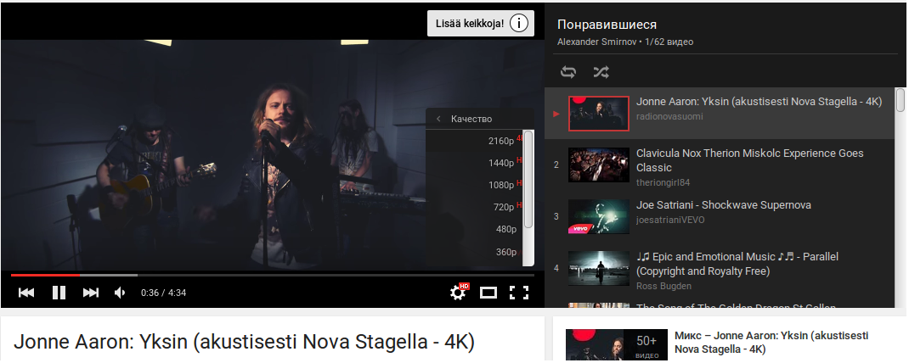
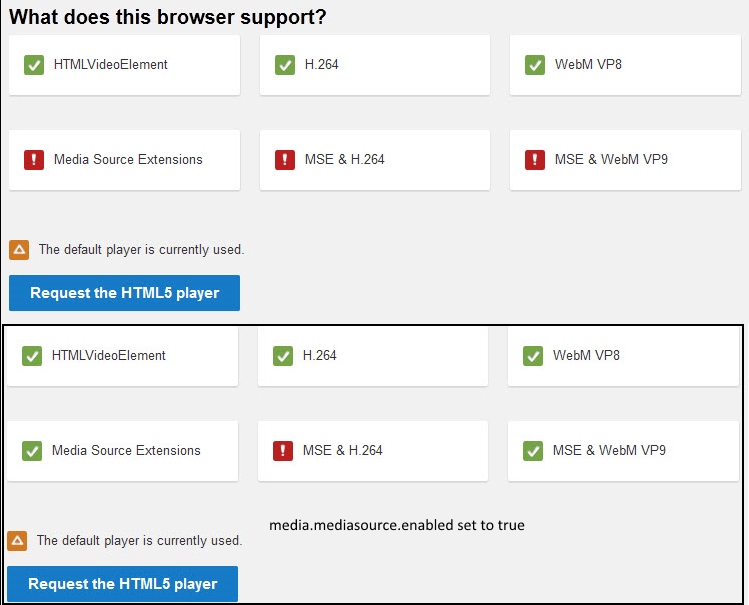
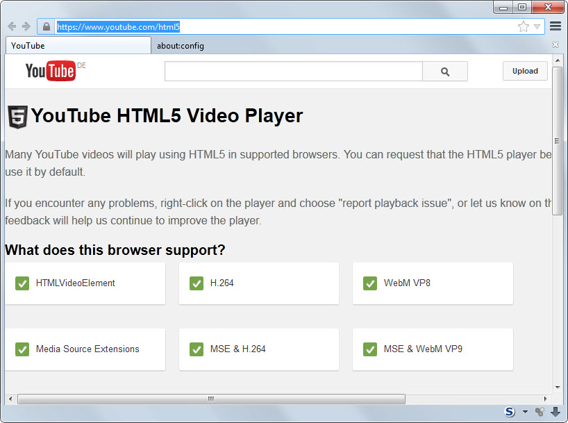

Из обсуждения на форуме.
Flash из лисы давно выкинул, но имею одну проблему. На ютубе выбор качества видео скуден: лишь 360 и 720, абсолютно везде. И это после включения всех mediasource параметров в лисе (по умолчанию вообще только 360). Система: Fedore 22 (дома), Ubuntu (на работе).
Кажется, разобрался. Нужно было еще и media.fragmented-mp4 включить. Руки дошли - и все получилось.
Настройку кодеков можно сделать по следующей статье (англ.):
http://www.ghacks.net/2014/07/25/enable-mse-h2-64-support-youtube-firefox-right-now/
Результат будет следующим:

Текст статьи (требуется перевод):
How to enable MSE & H2.64 support on YouTube for Firefox right now
By Martin Brinkmann on July 25, 2014, Last Update: March 6, 2015 34
When you open YouTube's HTML5 page in the most recent stable version of Firefox right now, you will notice that support is not available for all technologies listed on the page.
Support may be available for HTMLVideoElement, H.264 and WebM VP8, but not for Media Source Extensions, MSE & H.264 or MSE & WebM VP9.
A configuration option is available to enable Media Source Extensions and MSE & WebM VP9 right now in the Firefox browser.
To do so, load about:config in the browser's address bar and search for the term media.mediasource.enabled there. Double-click the preference to set it to true.
When you go back to YouTube's HMTL5 page afterwards, you will notice that only MSE & H.264 is listed as unsupported while all remaining options are supported.

If you do not do that, you will only receive select resolutions for videos on YouTube when using the HTML5 video player. This is quite problematic as Google will force Firefox users to use the HTML5 video player from Firefox 33 on.
Mozilla has not enabled the feature by default yet, not even in the most recent Nightly version of Firefox. This is an indicator that the feature is not yet ready for prime time and that it may take a couple of release cycles before it will be enabled by default.
Most video resolutions become available after you enable Media Source Extensions in Firefox. What is still not supported afterwards however is MSE & H.264 which means that some videos may not play in all resolutions yet on the site.
Enable MSE & H.264
A new preference in Firefox Nightly 34 changes that however, so that support for all requested technologies is provided afterwards on YouTube.
Note: While the article concentrates on Google's video hosting platform, enabling support for MSE & H.264 will benefit users of the browser on other websites as well.
You need to create a new preference to do so:
Update: Linux userrs may change the following preferences as well:
If you go back to YouTube's HTML page, you should see all six technologies listed as supported (in green).

Several bugs need to be resolved before the feature will be enabled directly by Mozilla for all users of the browser. You can check out the mediasource progress here.
This means that you may get hangs or experience other issues after enabling mp4 container support for Media Source Extensions in the browser.
Still, it is great to see that Mozilla is working on support for the feature in Firefox. It is unclear if it will manage to resolve all issues before Firefox 33 gets released, as it may result in an increase in support requests when Firefox users notice that YouTube is serving them only some resolutions.